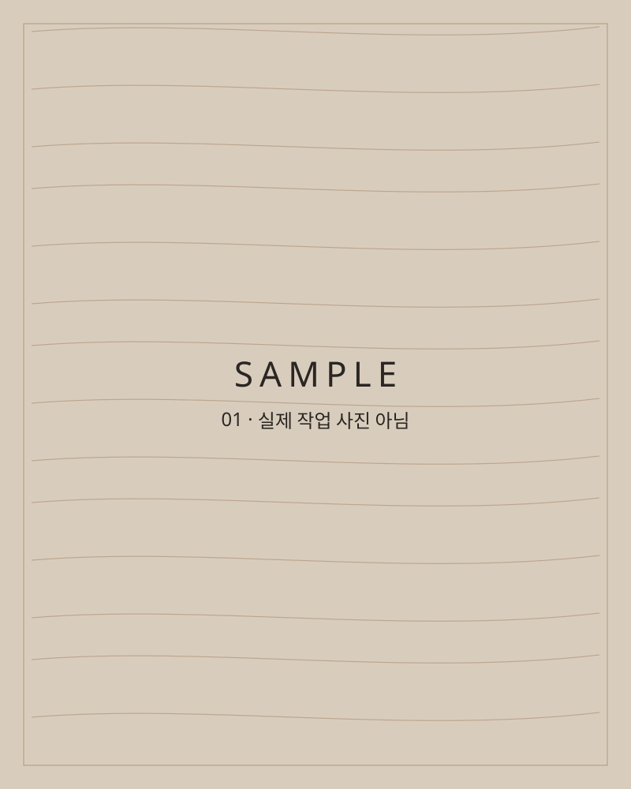

수원 · 인테리어 목수
경력은 한 달입니다.
대신 과정을 전부 기록합니다.
배우면서 일하는 목수 JM입니다. 무엇을 했고, 무엇이 서툴렀는지 숨기지 않고 보여 드립니다. [임시] 아래 사진은 샘플입니다

작업
지금 보이는 사진은 모두 [샘플]이며 실제 작업이 아닙니다. 작업이 끝날 때마다 이 갤러리를 채웁니다. [임시]
작업 일지
작업이 끝날 때마다 이런 형식으로 적어 올립니다. 잘한 것만이 아니라 서툴렀던 것도 적습니다. [샘플] 아래 세 개는 형식을 보여 드리는 예시이며 실제 기록이 아닙니다
[샘플] 날짜 · 수원 ○○동 · 공간
작업 이름이 여기에 들어갑니다
- 한 일
- 어떤 작업을 어떤 순서로 했는지 짧게 적습니다.
- 배운 것
- 이번 작업에서 새로 알게 된 점을 적습니다.
- 서툴렀던 것
- 잘 안 됐거나 다시 해야 했던 부분을 숨기지 않고 적습니다.
- 다음에는
- 같은 작업을 다시 한다면 달리할 점을 적습니다.
[샘플] 날짜 · 수원 ○○동 · 공간
작업 이름이 여기에 들어갑니다
- 한 일
- 작업 전, 중, 후 사진과 함께 올립니다.
- 배운 것
- 사용한 자재와 공구도 적습니다.
- 서툴렀던 것
- 걸린 시간이 예상과 달랐다면 그것도 적습니다.
- 다음에는
- 고객께 미리 알려 드릴 점도 정리합니다.
[샘플] 날짜 · 수원 ○○동 · 공간
작업 이름이 여기에 들어갑니다
- 한 일
- 고객이 허락하신 경우에만 현장 사진을 올립니다.
- 배운 것
- 선배나 동료에게 배운 점이 있으면 적습니다.
- 서툴렀던 것
- 보수가 필요했다면 어떻게 고쳤는지 적습니다.
- 다음에는
- 일지가 쌓이면 이곳이 제 이력이 됩니다.
소개
저는 수원에서 일하는 인테리어 목수 JM입니다.
경력은 이제 한 달입니다. 이 일이 멋있고 저와 잘 맞는다고 느껴서 시작했습니다.
왜 기록하나요
경력이 짧은 제가 드릴 수 있는 믿음은 연차가 아니라 투명함이라고 생각합니다. 그래서 어떤 일을 어떻게 했는지, 무엇이 서툴렀는지를 일지로 남기고, 아직 어려운 일은 어렵다고 말씀드립니다.
[임시] 프로필 사진 자리입니다. 사진을 받으면 넣겠습니다.
일하는 방식
[임시] 아래 내용은 시안이며, 실제로 지킬 수 있는지 JM이 확인한 뒤 확정합니다.
- 상담
어떤 공간을 어떻게 바꾸고 싶은지 듣습니다.
- 실측
현장을 보고 치수와 상태를 확인합니다.
- 견적
포함 항목과 제외 항목을 나누어 적어 드립니다.
- 시공
진행 상황을 사진으로 남깁니다.
- 기록
끝난 뒤 작업 일지를 올립니다.
- [임시] 작업 전, 중, 후 사진을 남겨 공유합니다.
- [임시] 추가 비용이 생길 것 같으면 작업 전에 먼저 알려 드립니다.
- [임시] 할 수 없는 일은 할 수 없다고 말씀드립니다.
맡겨 주셔도 되는 일 [임시]
- 작은 목공 보수
- 선반 설치 같은 간단한 작업
- JM이 직접 정해서 채울 항목
아직 어려운 일 [임시]
- 큰 구조 변경이 필요한 공사
- 다른 공정과 함께 가는 대형 현장
- JM이 직접 정해서 채울 항목
[임시] 비용은 자재비와 인건비를 더해 계산합니다. 금액은 현장을 확인한 뒤 안내드립니다.